Chapter 5 Scaling, Quantisation and Mixed Precision
Chapter 4 built the number formats of modern accelerators bit by bit and showed what rounding and accumulation do to them. It left one problem open. A narrow format has a fixed window of magnitudes: FP8 E4M3 spans 5.4 decades, FP4 E2M1 barely one, and INT8 is a uniform grid of 255 levels. A tensor in a language model has a range of its own, which moves from layer to layer, from token to token and from step to step, and in which a few outlier channels can sit a hundred times above the rest. Cast such a tensor straight into an 8- or 4-bit format and either its largest values saturate or most of its small ones flush to zero. The remedy is a scale: a number stored next to the elements that slides the tensor’s range into the format’s window. Every low-precision scheme in this book is a set of answers to four questions about scales: how many there are (the granularity), in which format they are stored, how they are computed, and which kernel applies them.
This chapter works through those answers and their consequences. We start with block scaling: the OCP microscaling (MX) formats and NVIDIA’s NVFP4, why small blocks recover the range that 4- and 8-bit formats lack (quantitatively, on Gaussian data and on activations with outliers), how a randomised Hadamard rotation spreads outliers over a block and when that helps, and why the backward pass, whose GEMMs reduce over different dimensions, needs scales of a different shape. We then develop the mathematics of quantisation that every later method relies on: the uniform affine quantiser and its zero point, the 6 dB per bit rule, the trade-off between clipping and rounding, granularity and its metadata, non-uniform grids such as NF4, and the Hessian-weighted error that tells us which errors the loss notices, with the Optimal Brain Surgeon update that GPTQ applies column by column. The last part assembles all of this into mixed-precision recipes: the standard recipe for BF16 and FP16 training (master weights, FP32 accumulation and sensitive operations, loss scaling), FP8 training with delayed, current and block scaling, the DeepSeek-V3 FP8 recipe as a full case study, and the choice of formats for inference.
The code is the same bit-exact simulator, llmsys/numerics.py, whose block quantiser takes any block shape and any scale format; the lab (Lab 5) re-implements its MX, NVFP4, Hadamard, affine and second-order parts and a DeepSeek-style block-scaled FP8 GEMM, and measures on the A100 what each granularity, rotation and scaling rule costs in error. The low-precision training capstone (Chapter 7) then tests these recipes on real training runs by removing one safeguard at a time, and the later chapters on pretraining (Chapter 20), single-GPU performance (Chapter 23), cheaper inference (Chapter 48), the KV cache (??) and parameter-efficient fine-tuning (Chapter 42) apply them at scale.
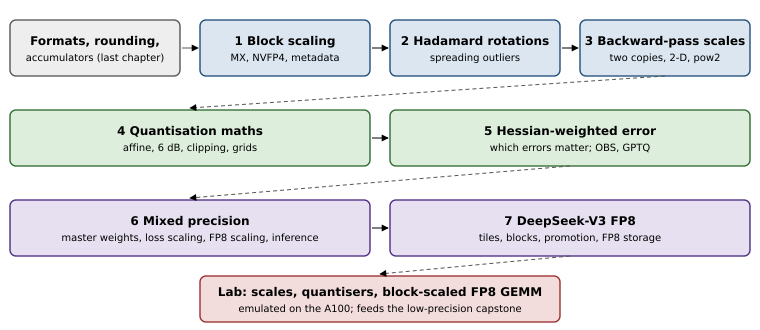
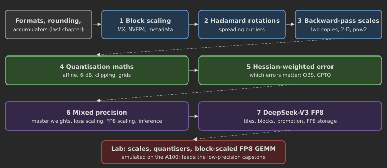
5.1 Block scaling: microscaling (MX) and NVFP4
A format has a fixed dynamic range (in decades, Table 4.3); a tensor has its own. A scale \(s\) maps one onto the other: we store \(p = \operatorname{round}(x/s)\) in the narrow format and reconstruct \(\hat x = s\,p\). Choosing \(s=\max|x|/q_{\max}\) (the absmax rule) puts the largest element at the top of the format’s grid. The scale can be shared by the whole tensor, by a row, by a block of 16 or 32 elements, or anything in between, and this granularity is the main design axis of every low-precision scheme in the book.
OCP microscaling (MX). The MX formats (Rouhani et al., 2023) attach one shared scale to every block of \(k=32\) consecutive elements along the reduction dimension. The scale is a pure power of two stored as E8M0, an 8-bit biased exponent (\(2^{-127}\) to \(2^{127}\), code 255 is NaN). The specification fixes the scale rule: with \(e_{\max}^{\text{elem}}\) the exponent of the element format’s largest binade (2 for E2M1, 8 for E4M3), \[X = 2^{\,\lfloor\log_2\max_i|x_i|\rfloor - e_{\max}^{\text{elem}}},\qquad p_i = \operatorname{round}_{\text{sat}}(x_i/X),\qquad \hat x_i = X\,p_i . \tag{5.1}\] The concrete formats are MXFP8 (E4M3 or E5M2 elements), MXFP6 (E2M3, E3M2), MXFP4 (E2M1) and MXINT8. An MXFP4 block costs \(8+32\cdot4=136\) bits, 4.25 bits per element (Figure 5.2). A power-of-two scale is cheap in hardware: applying it is an addition to the exponent, and on Blackwell-class tensor cores the block scales are consumed inside the MMA instruction, so a block-scaled GEMM needs no separate dequantisation pass.
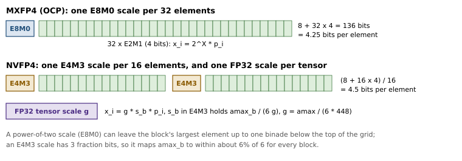
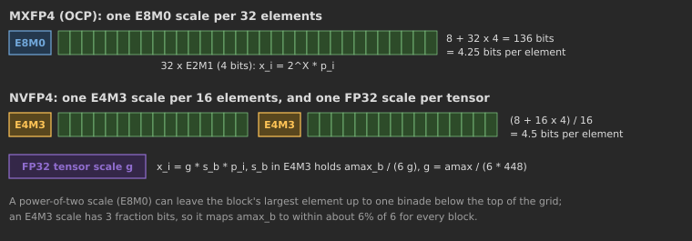
The floor in (5.1) places \(\max|x_i|/X\) in \([2^{e_{\max}}, 2^{e_{\max}+1})\). For E2M1 that interval is \([4,8)\) and the format’s maximum is 6, so the largest elements of a block can saturate; for E4M3 it is \([256,512)\) against a maximum of 448. Rounding the exponent up instead (\(X = 2^{\lceil\log_2(\max|x|/q_{\max})\rceil}\)) never saturates but leaves up to one binade unused. NVIDIA’s MXFP8 pre-training recipe rounds up (Mishra et al., 2025). Our emulation agrees: on the activations of Figure 5.3, MXFP8 with the specification’s floor rule has a GEMM error of 4.8%, with the round-up rule 3.7%.
NVFP4 uses blocks of 16 elements, an E4M3 block scale and an FP32 per-tensor scale \(g\): \[g = \frac{\max|x|}{6\cdot448},\qquad s_b = \operatorname{round}_{\text{E4M3}}\Big(\frac{\max_{i\in b}|x_i|}{6\,g}\Big),\qquad \hat x_i = g\,s_b\,p_i . \tag{5.2}\] The E4M3 scale has three fraction bits, so it maps each block’s maximum to within about 6% of the top of the E2M1 grid instead of within a factor of two; the smaller block tracks local magnitude better. The price is 4.5 bits per element.
5.1.1 Why block scaling recovers range, quantitatively
Consider an integer grid first. With \(s=\max|x|/q_{\max}\), rounding errors are roughly uniform on \([-s/2,s/2]\) with variance \(s^2/12\), so the mean squared error is proportional to \(\mathbb{E}[\max|x|^2]\) over the elements sharing a scale. For \(n\) independent Gaussian values, \(\max|x|\approx\sigma\sqrt{2\ln n}\). One scale for a \(4096\times4096\) tensor (\(n=2^{24}\)) against one per block of 32 therefore changes the MSE by a factor \(\ln 2^{24}/\ln 32 = 4.8\), a predicted gain of \(10\log_{10}4.8=6.8\) dB. We measure 7.05 dB with INT4 (13.2 dB per tensor, 20.3 dB per 32-block). For a floating-point element format the error is relative, so scale granularity matters through range instead: E2M1 represents nothing below 1/24 of a block’s maximum except zero, and with one scale per tensor 17.5% of a Gaussian tensor’s elements are flushed to zero, against 7.8% with blocks of 32.
Real activations are not Gaussian. A handful of hidden dimensions carry values 10 to 100 times larger than the rest (Dettmers et al., 2022), and with one scale per tensor (or per token) those outliers set the scale for everything else. Blocks along the reduction dimension confine an outlier to its own block. Figure 5.3 measures this: activations with eight outlier channels multiplied by 30, a \(2048\times4096\) by \(4096\times1024\) GEMM, each operand quantised with the granularity on the horizontal axis.
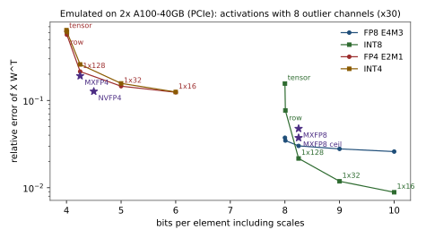
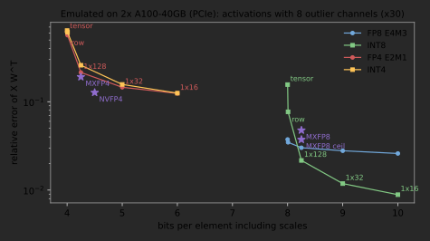
Three lessons stand out. FP8 E4M3 barely cares about granularity (3.7% per tensor, 3.0% with \(1\times128\) tiles): its 5.4 decades absorb an outlier of 30. INT8 cares a great deal (15.6% per tensor, 2.2% with \(1\times128\)): a uniform grid has no range to spare, but once the scale is local its 8 uniform bits beat E4M3’s 4 significant bits. And 4-bit formats are unusable without fine scales (62% error per tensor, 15% with blocks of 32, 12% with blocks of 16); NVFP4’s 16-element blocks with E4M3 scales reach 12.7% at 4.5 bits, MXFP4 19% at 4.25 bits.
Napkin Math: What the scales cost a decode step
For the 8B-parameter model of the decode estimate in Section 4.1, the weights take 4.25 GB in MXFP4 and 4.5 GB in NVFP4 (elements plus block scales; the tensor scales of NVFP4 are a few bytes). At 1.555 TB/s the floor of a batch-1 decode step is 2.73 ms against 2.89 ms, both against 10.3 ms in BF16. NVFP4’s extra quarter of a bit costs 6% of the step and, on the activations of Figure 5.3, buys a GEMM error of 12.7% instead of 19.1%. One scale per tensor would save another quarter to half a bit per weight and raise the error to 62%. Metadata is the cheapest accuracy there is.
| Scheme | elements | scale | bits/element | scale factors out of the dot product? |
|---|---|---|---|---|
| per tensor | any | FP32 | \(+32/n\) | yes: one multiply in the epilogue |
| per row (channel / token) | any | FP32 | \(+32/K\) | yes: outer product in the epilogue |
| per group of 128, with zero point | INT4 | FP16 + INT4 | 4.16 | no: dequantise inside the K loop |
| MX (blocks of 32 along K) | FP8/6/4 | E8M0 | +0.25 | no: hardware applies it in the MMA |
| NVFP4 (blocks of 16) | E2M1 | E4M3 + FP32 | 4.5 | no: hardware applies it in the MMA |
| DeepSeek-V3 activations, \(1\times128\) | E4M3 | FP32 | 8.25 | no: applied at each promotion |
| DeepSeek-V3 weights, \(128\times128\) | E4M3 | FP32 | 8.002 | no: applied at each promotion |
Systems Lens: Which scales a GEMM can pull out of the sum
For \(C = AB\) with per-row scales \(s^A_m\) on \(A\) and per-column scales \(s^B_n\) on \(B\), \(C_{mn} = s^A_m s^B_n\sum_k p^A_{mk}p^B_{kn}\): the integer or FP8 GEMM runs unscaled and the epilogue multiplies by an outer product of scales. This is why weights are scaled per output channel and activations per token. A scale that varies along \(K\) (groups, blocks, MX) does not factor out: either the kernel dequantises in registers before the MMA (weight-only INT4 kernels), or the hardware applies the scale inside the MMA (MX and NVFP4 on Blackwell), or the kernel accumulates each \(K\)-block separately and rescales partial sums (DeepSeek-V3 on Hopper, Section 5.7). A per-column activation scale (one per input channel) varies along \(K\) and cannot be used directly by a W8A8 GEMM, which is why SmoothQuant moves it into the weights (Chapter 48).
Key Idea: A quantisation scheme is four choices about scales
Every scheme in this chapter, and almost every one a new paper proposes, is an element format plus four choices about its scales: the granularity (tensor, row, group or block, and along which dimension), the scale’s own format (FP32, FP16, E4M3, E8M0, or two levels of them), the rule that computes it (absmax, a power of two rounded down or up, a clipped or calibrated value, a value delayed from earlier steps), and the place where it is applied (a GEMM epilogue, a dequantisation in registers, the MMA instruction, a promotion step). The first three set the error; the fourth sets what the kernel costs.
Deeper Dive: Reading the research: Microscaling Data Formats for Deep Learning (Rouhani et al., 2023)
What it proposes. A family of block-scaled formats, standardised through the Open Compute Project by a group of accelerator and cloud vendors: blocks of \(k=32\) elements along the reduction dimension share one 8-bit power-of-two scale (E8M0), and the elements are FP8 (E4M3 or E5M2), FP6 (E2M3 or E3M2), FP4 (E2M1) or INT8. The scale rule is fixed by the specification (5.1), so every implementation produces the same bits. The paper’s experiments span three uses: casting trained FP32 models directly to MXINT8 or MXFP8 for inference, with small accuracy losses; MXFP6 and MXFP4 inference after quantisation-aware fine-tuning or a light calibration; and training GPT-style language models (the largest with about 1.5 billion parameters) with MXFP6 weights, activations and gradients, and with MXFP4 weights, at losses close to the FP32 baseline.
Cost model in our notation. An MX tensor of \(b\)-bit elements costs \(b+8/k\) bits per element: 4.25 (MXFP4), 6.25 (MXFP6), 8.25 (MXFP8). The scale is applied as an exponent addition, inside the MMA on hardware that supports the formats, so a block-scaled GEMM moves the bytes of an unscaled one plus 0.25 bits per element (3% more for MXFP8, 6% for MXFP4). The error has two parts. Within a block, the element format’s relative error applies to every value that lands in its normal range. At the top, the floor in (5.1) places the block maximum in \([2^{e_{\max}},2^{e_{\max}+1})\) of the element grid, but E2M1 ends at \(1.5\cdot2^{e_{\max}}=6\) and E4M3 at \(1.75\cdot2^{e_{\max}}=448\). If the significand of a block’s maximum is spread log-uniformly over its binade, the maximum saturates whenever that significand exceeds 1.5 (E2M1) or 1.75 (E4M3): in \(\log_2(2/1.5)=41\%\) of FP4 blocks and \(\log_2(2/1.75)=19\%\) of FP8 blocks, with a clipping error of up to 25% and 12.5% of the largest value respectively. At the bottom, a power of two cannot match the block maximum to better than a factor of two, so a block can waste up to one binade of its element range.
What our code reproduces. The formats bit for bit: the lab’s mx_quantize matches numerics.mx_quantize exactly for MXFP4, MXFP6 and MXFP8, and the metadata is exactly 0.25 bits per element. On the outlier activations of Figure 5.3, the emulated MXFP8 GEMM has a relative error of 4.8% with the specification’s floor rule and 3.7% when the exponent is rounded up, which is the saturation effect above; MXFP4 has 19.1% against 14.6% for E2M1 blocks of 32 with an FP32 scale, which is the price of a power-of-two scale, and against 12.7% for NVFP4.
What is out of reach, and what its evaluation leaves out. The end-to-end training and inference results need MX tensor cores (or weeks of emulated compute) and the paper’s models and evaluation suites, so we do not reproduce them. The evaluation does not separate the effect of the scale rule from that of the element format; later work found that rounding the shared exponent up instead of down was needed for MXFP8 pre-training at scale (Mishra et al., 2025). It does not discuss which orientation of blocks the backward pass needs (Section 5.3), the precision of the accumulator inside a block-scaled MMA (Section 4.6), or how the formats behave over the trillion-token horizons where FP8 training first showed instabilities (Fishman et al., 2025). And it fixes the scale format before asking how many bits a scale needs: NVFP4’s E4M3 scales per 16 elements answer the same question differently, at 4.5 bits per element.
5.2 Rotating outliers away: Hadamard transforms
Any orthogonal matrix \(\mathbf{Q}\) applied to both operands along the reduction dimension leaves a GEMM unchanged: \((\mathbf{X}\mathbf{Q})(\mathbf{W}\mathbf{Q})^{\top} = \mathbf{X}\mathbf{Q}\mathbf{Q}^{\top}\mathbf{W}^{\top} = \mathbf{X}\mathbf{W}^{\top}\). We may therefore quantise \(\mathbf{X}\mathbf{Q}\) and \(\mathbf{W}\mathbf{Q}\) instead, and choose \(\mathbf{Q}\) to make them easier to quantise. The normalised Hadamard matrix \(\mathbf{H}_b/\sqrt b\) (Sylvester’s construction, \(b\) a power of two) has entries \(\pm1/\sqrt b\), is orthogonal, and can be applied in \(b\log_2 b\) additions by the fast Walsh–Hadamard transform. An outlier of size \(a\) in one channel contributes \(\pm a/\sqrt b\) to every channel of its block, while the Gaussian bulk stays Gaussian with the same variance (an orthogonal map preserves an isotropic Gaussian). The block maximum therefore drops from about \(a\) to about \(a/\sqrt b + \sigma\sqrt{2\ln b}\): for \(a=30\sigma\) and \(b=128\), from \(30\sigma\) to roughly \(6\sigma\). Multiplying by a random diagonal of signs first (a randomised Hadamard transform, \(\mathbf{Q}=\mathbf{D}\mathbf{H}_b/\sqrt b\)) makes it unlikely that any fixed structure in the data lines up with the transform. Inference methods fold fixed or learned rotations into the weights (QuaRot, Ashkboos et al., 2024; SpinQuant, Liu et al., 2025); the 2025 FP4 training recipes apply random Hadamard transforms of size 16 to 128 on the fly (NVIDIA, 2025; Tseng et al., 2025).
numerics.hadamard_transform).
def hadamard_transform(x, block, signs=None):
y = x.reshape(*x.shape[:-1], x.shape[-1] // block, block)
if signs is not None:
y = y * signs # random diagonal D
h = 1
while h < block: # fast Walsh-Hadamard: log2(block) passes
z = y.reshape(*y.shape[:-1], block // (2 * h), 2, h)
y = torch.stack([z[..., 0, :] + z[..., 1, :], z[..., 0, :] - z[..., 1, :]], -2)
y = y.reshape(*z.shape[:-3], block)
h *= 2
return (y / block ** 0.5).reshape(x.shape)On the outlier activations of Figure 5.3 (Figure 5.4; bench.py --only hadamard), the ratio of the largest activation to the RMS falls from 68.7 to 18.1, 13.3, 7.5 and 5.1 for transform blocks of 16, 32, 128 and 4096. The GEMM error falls for MXFP4 (19.1% to 15.9% with blocks of 32) and for INT4 with groups of 32 (15.7% to 12.0%), but rises for NVFP4 (12.7% to 14.4% with blocks of 32, 14.0% with 128). NVFP4’s 16-element blocks with E4M3 scales already confine an outlier to a block and give that block a well-fitted scale; spreading the outlier makes every value in the block large, and they then land on the coarse top of the E2M1 grid. This agrees with the NVFP4 training recipe, which found no benefit from the transform in the forward and data-gradient GEMMs and applies it only to the weight-gradient GEMM (NVIDIA, 2025). A rotation is a tool for the coarse-scale formats, not a free lunch.
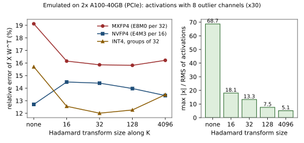
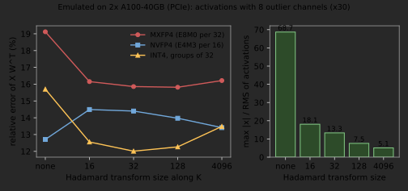
5.3 Scales and the backward pass
A linear layer \(\mathbf{Y}=\mathbf{X}\mathbf{W}^{\top}\) with \(\mathbf{X}\in\mathbb{R}^{M\times K}\) and \(\mathbf{W}\in\mathbb{R}^{N\times K}\) runs three GEMMs per training step, each reducing over a different dimension: the forward pass over \(K\), the data gradient \(\mathrm{d}\mathbf{X}=\mathrm{d}\mathbf{Y}\,\mathbf{W}\) over \(N\), and the weight gradient \(\mathrm{d}\mathbf{W}=\mathrm{d}\mathbf{Y}^{\top}\mathbf{X}\) over \(M\). A block scale is only usable in a GEMM if its blocks run along that GEMM’s reduction dimension (Table 5.1), so the \(1\times128\) tiles of \(\mathbf{X}\) along \(K\) are the wrong shape for the weight gradient, which needs \(128\times1\) tiles along the tokens. There are four ways out:
- Quantise twice from the high-precision source, once along each reduction axis. The MXFP8 recipe keeps two copies of each tensor (Mishra et al., 2025). It costs memory and a second cast, and the two copies differ, so the forward and backward passes see slightly different weights.
- Re-quantise the forward copy along the other dimension (
numerics.requantize). One copy, but errors compound. - Two-dimensional blocks whose scale is valid in both orientations: DeepSeek-V3’s \(128\times128\) weight blocks, NVFP4’s \(16\times16\) weight blocks (NVIDIA, 2025). One consistent copy, but a coarser scale.
- Power-of-two scales: re-quantising \(2^{a}p\) with a new scale \(2^{b}\) only shifts the exponent of \(p\), which is exact unless a value drops into the subnormal range. DeepSeek-V3 uses this for the activations it transposes from \(1\times128\) to \(128\times1\) tiles.
We measure the copy that the weight-gradient GEMM needs for the outlier activations (bench.py --only backward), as the relative error against the BF16 source. With E4M3 and FP32 scales, the forward copy (\(1\times128\)) has 1.56%; a \(128\times1\) copy made directly from the source has 2.58%, made by re-quantising the forward copy 3.01%, and a \(128\times128\) 2-D block 2.61%. With power-of-two scales every copy has 2.64% and the re-quantised copy differs from the forward copy by \(1.7\times10^{-8}\): re-quantisation is free, which is the point of DeepSeek’s trick, paid for by a coarser scale in the forward pass. With E2M1 elements and E4M3 scales (NVFP4-like, blocks of 16) re-quantisation hurts much more: 8.6% forward, 9.5% direct, 12.7% re-quantised and 14.1% with \(16\times16\) blocks, which is why the NVFP4 recipe uses 2-D blocks only for the weights, whose values are free of activation outliers.
5.4 Quantisation maths
5.4.1 Uniform affine quantisation
A \(b\)-bit uniform quantiser maps a real \(x\) to an integer code with a scale \(s>0\) and an integer zero point \(z\): \[q = \operatorname{clamp}\big(\lfloor x/s\rceil + z,\ q_{\min},\ q_{\max}\big),\qquad \hat x = s\,(q-z). \tag{5.3}\] Symmetric quantisation fixes \(z=0\) and \(s=\max|x|/q_{\max}\) (with the narrow range \(q_{\min}=-q_{\max}\)). Asymmetric quantisation maps \([\min(x,0),\max(x,0)]\) onto \([q_{\min},q_{\max}]\) with \(s=(\max-\min)/(q_{\max}-q_{\min})\) and \(z=q_{\min}-\lfloor\min/s\rceil\). Including 0 in the range and making \(z\) an integer guarantees that \(x=0\) is represented exactly, which matters for padding, for ReLU outputs and for masked positions. Asymmetric quantisation wastes no codes on a one-sided distribution, but it costs compute in a GEMM: expanding \[\sum_k (q^A_k - z_A)(q^W_k - z_W) = \sum_k q^A_kq^W_k - z_W\sum_k q^A_k - z_A\sum_k q^W_k + Kz_Az_W\] shows that each zero point adds a row or column sum to the epilogue. The convention that follows is symmetric weights (no \(z_W\), so no per-row sums of activations) and, where needed, asymmetric activations, whose \(z_A\sum_k q^W_k\) term can be precomputed offline. In weight-only kernels the zero point is subtracted while dequantising in registers and costs one extra operation per weight.
5.4.2 Rounding noise and the 6 dB rule
If values are spread over many quantisation steps, the rounding error \(x-\hat x\) is close to uniform on \([-s/2,s/2]\), with mean 0 and variance \[\mathbb{E}[(x-\hat x)^2] = \frac1s\int_{-s/2}^{s/2} t^2\,dt = \frac{s^2}{12}. \tag{5.4}\] For a signal uniform on \([-A,A]\) with \(s=2A/2^b\), the signal-to-quantisation-noise ratio is \(\frac{A^2/3}{s^2/12} = 2^{2b}\), or \(6.02\,b\) dB: each bit buys 6 dB. The per-tensor E4M3 and E5M2 measurements of Section 4.4 (31.6 against 25.6 dB on a Gaussian tensor) show the same rule for the mantissa bits of a float.
5.4.3 Clipping against rounding
The absmax scale wastes resolution on rare large values. Clipping at \(c<\max|x|\) uses \(s=c/q_{\max}\) and incurs two errors: rounding noise \(s^2/12\) on the values inside \([-c,c]\), and clipping error on those outside: \[\operatorname{MSE}(c) \approx \frac{c^2}{12\,q_{\max}^2}\,P(|x|\le c) \;+\; 2\int_c^\infty (x-c)^2\,p(x)\,dx . \tag{5.5}\] The first term grows with \(c\), the second falls, and the optimum depends on the tails of \(p\) and on \(b\). Figure 5.5 sweeps \(c\) for Gaussian and Laplace data: at 4 bits the optimum is \(2.51\sigma\) for a Gaussian and \(3.43\sigma\) for a Laplace distribution, at 6 bits \(3.30\sigma\) and \(5.15\sigma\), while absmax would clip at the sample maximum, about \(5\sigma\) (Gaussian) or \(9\sigma\) (Laplace) for \(2^{19}\) samples. At 4 bits the optimal clip has a third to a fifth of the absmax MSE. This analysis, with closed forms for the integral, is the ACIQ method of Banner et al. (2019); calibration methods that choose clipping ranges by minimising MSE or a KL divergence on sample data are its empirical versions.
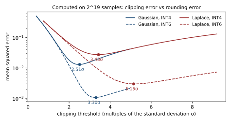
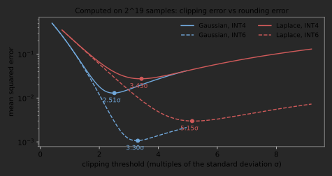
5.4.4 Granularity
Table 5.1 listed the granularities with their costs. The library implements all of them with one argument, the block shape over the 2-D view (rows \(\times\) last dimension) of a tensor: "tensor", "row" (per output channel of a weight, per token of an activation), "col" (per input channel), an integer \(g\) (groups of \(g\) along the last dimension) or a tuple such as (128, 128).
numerics.quantize).
def quantize(x, fmt, block="row", symmetric=True, clip=1.0, scale_fmt=None):
xb, (br, bc) = blocked(x, block) # pad, view as (M/br, br, K/bc, bc)
if isinstance(fmt, IntFormat) and not symmetric:
lo = (xb.amin(dim=(1, 3)) * clip).clamp(max=0)
hi = (xb.amax(dim=(1, 3)) * clip).clamp(min=0)
s = round_scale((hi - lo) / (fmt.qmax - fmt.qmin), scale_fmt)
z = (fmt.qmin - torch.round(lo / s)).clamp(fmt.qmin, fmt.qmax)
else:
s = round_scale(xb.abs().amax(dim=(1, 3)) * clip / fmt.max_finite, scale_fmt)
z = None
y = xb / s[:, None, :, None] + (0 if z is None else z[:, None, :, None])
q = round_elements(y, fmt) # int: round + clamp; float: saturating cast
return QTensor(values=q, scale=s, zero=z, fmt=fmt, block=(br, bc), shape=x.shape)5.4.5 Non-uniform grids
A uniform grid is optimal for uniformly distributed values; weights are closer to Gaussian, with most mass near zero. A non-uniform grid puts more levels where the values are. NF4 (Dettmers et al., 2023) takes quantiles of \(\mathcal{N}(0,1)\) so that each level covers equal probability mass, normalised to \([-1,1]\), with 8 positive and 7 negative levels plus an exact zero; our nf4_grid() reproduces the published table to \(10^{-6}\). Logarithmic grids (\(0,\pm2^{-k}\)) suit values spread over decades, and FP4 E2M1 is itself a non-uniform grid (Figure 5.6). On Gaussian weights with blocks of 64, NF4 reaches 20.7 dB against 19.4 dB for symmetric INT4 and 19.5 dB for E2M1. The cost is in the kernel: a non-uniform code must be looked up in a table (16 entries kept in registers or shared memory) instead of being converted arithmetically, and no tensor core multiplies NF4 directly, so NF4 is a storage format that is dequantised to BF16 before the GEMM.
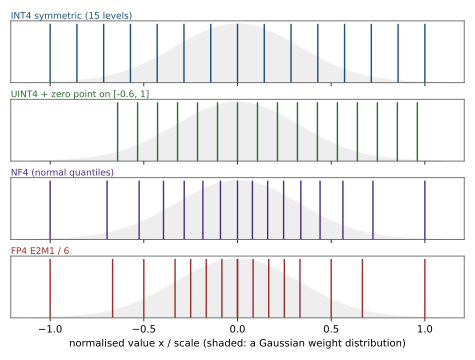
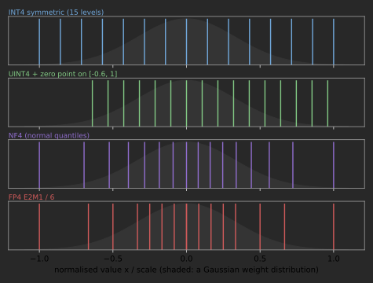
5.4.6 Outliers dominate the error
With an absmax scale, every element’s rounding noise is \(s^2/12\) with \(s\) set by the largest element. One activation channel 30 times larger than the rest multiplies \(s\) by 30 and the noise of every other element by 900, while the outlier itself is represented well. Since outlier channels are systematic in LLM activations (Dettmers et al., 2022; Sun et al., 2024), quantisation methods are best understood as different ways to stop outliers from setting the scale for everyone: smaller blocks along \(K\) (MX, DeepSeek’s tiles), keeping outlier channels in higher precision (LLM.int8()), migrating the range into the weights (SmoothQuant), rotating the basis so that no channel stands out, or changing the architecture so that outliers never form (Bondarenko et al., 2023).
5.5 Hessian-weighted error: which errors matter
Weight MSE treats every weight alike, but the loss does not. Expanding the loss around trained weights \(\mathbf{w}\), \[\mathcal{L}(\mathbf{w}+\boldsymbol{\delta}) = \mathcal{L}(\mathbf{w}) + \mathbf{g}^{\top}\boldsymbol{\delta} + \tfrac12\,\boldsymbol{\delta}^{\top}\mathbf{H}\,\boldsymbol{\delta} + O(\|\boldsymbol{\delta}\|^3), \tag{5.6}\] and at a minimum \(\mathbf{g}\approx\mathbf{0}\), so the quantisation error \(\boldsymbol{\delta}\) costs \(\tfrac12\boldsymbol{\delta}^{\top}\mathbf{H}\boldsymbol{\delta}\). For a linear layer \(\mathbf{y}=\mathbf{W}\mathbf{x}\) with the proxy loss “mean squared change of the output on calibration inputs \(\mathbf{X}\in\mathbb{R}^{n\times d}\)”, the loss is exactly quadratic, the rows of \(\mathbf{W}\) decouple, and each row has the Hessian \[\mathbf{H} = \frac{2}{n}\mathbf{X}^{\top}\mathbf{X},\qquad \Delta\mathcal{L} = \tfrac12\sum_j \boldsymbol{\delta}_j^{\top}\mathbf{H}\,\boldsymbol{\delta}_j = \frac1n\big\|\mathbf{X}\,\Delta\mathbf{W}^{\top}\big\|_F^2 . \tag{5.7}\] An error on a weight that multiplies a large or frequently active input channel costs far more than the same error elsewhere. In the lab’s test, two perturbations with identical weight MSE, one on the input channel with the smallest variance and one on the largest (scales \(10^{-1}\) and \(10^{1}\)), differ in loss by more than a factor of 1,000.
The Hessian also tells us how to compensate. Optimal Brain Surgeon (Hassibi and Stork, 1993), which refined the diagonal-Hessian Optimal Brain Damage of LeCun et al. (1990), asks: if weight \(i\) must take the value \(q\), how should the others move to minimise the loss? Minimising \(\tfrac12\boldsymbol{\delta}^{\top}\mathbf{H}\boldsymbol{\delta}\) subject to \(\mathbf{e}_i^{\top}\boldsymbol{\delta}=q-w_i\) with a Lagrange multiplier gives \[\boldsymbol{\delta} = -\frac{w_i-q}{[\mathbf{H}^{-1}]_{ii}}\,\mathbf{H}^{-1}\mathbf{e}_i,\qquad \Delta\mathcal{L} = \frac{(w_i-q)^2}{2\,[\mathbf{H}^{-1}]_{ii}} . \tag{5.8}\]
numerics.obs_quantize_one).
def obs_quantize_one(w, H, i, target):
Hinv = torch.linalg.inv(H.double())
d = (w[i] - target) / Hinv[i, i]
w_new = w - d * Hinv[:, i] # move the correlated weights to absorb the error
w_new[i] = target
return w_new, float(0.5 * (w[i] - target) ** 2 / Hinv[i, i])The lab verifies that this update equals the brute-force least-squares optimum with \(w_i\) fixed and that the predicted \(\Delta\mathcal{L}\) is exact. Applying it to every weight of a row in turn, quantising one input column at a time and updating the rest, is GPTQ; Optimal Brain Compression (Frantar and Alistarh, 2022) and AdaRound (Nagel et al., 2020) are relatives. Those calibration algorithms, with AWQ and SmoothQuant, are the subject of Chapter 48; this section supplies the objective they all minimise.
5.6 Mixed precision for training and inference
5.6.1 The general recipe
Section 20.8 introduced the training recipe and Section 23.5 what autocast does per operator; here we derive it. Every mixed-precision scheme assigns a format to five roles: storage of each tensor, matmul inputs, accumulation, master weights and optimiser state. The recipe that Chapter 4 and the preceding sections imply (Micikevicius et al., 2018):
- Matmul inputs narrow, accumulation wide. GEMM operands in BF16 (or FP16, FP8), products accumulated in FP32 on the tensor core.
- FP32 master weights. The optimiser updates an FP32 copy, so updates below half a BF16 ulp survive (Section 4.5); the BF16 copy used by the forward pass is a rounding of it.
- Optimiser state in FP32 by default. The second Adam moment holds squares of gradients and needs range; 8-bit block-quantised states (Dettmers et al., 2022) and BF16 moments work with care (Chapter 19).
- Numerically sensitive operations in FP32: softmax and log-softmax, normalisation statistics, the loss, reductions such as
sumandmean,expandpow, and usually the residual stream.torch.autocastencodes this as a per-operator policy. - Loss scaling for FP16 (not BF16).
Napkin Math: Bytes per parameter of a training state
AdamW in standard mixed precision: BF16 weights (2) + FP32 master weights (4) + FP32 gradients (4) + two FP32 moments (8) = 18 bytes per parameter, or 16 if the gradients are kept in BF16. A 7B model needs 112–126 GB before any activation, which is why the sharding of Chapter 25 exists. DeepSeek-V3’s recipe (FP32 master weights and gradients, BF16 moments) spends 4 + 4 + 4 = 12 bytes on the optimiser side; stochastic rounding of BF16 weights without a master copy would save 4 more.
Loss scaling. FP16’s smallest subnormal is \(2^{-24}\approx6\times10^{-8}\). Multiplying the loss by \(S\) multiplies every gradient by \(S\) (backpropagation is linear in the upstream gradient), moving the small ones into range; the optimiser divides by \(S\) in FP32 before using them. We measure on a gradient-like log-normal tensor centred at \(10^{-6}\) (bench.py --only lossscale): unscaled FP16 flushes 10.4% of the values to zero and stores 88% as subnormals; \(S=2^{10}\) flushes 0.017% and leaves 16.5% subnormal; \(S=2^{16}\) flushes \(2.9\times10^{-6}\) of them and leaves 0.53% subnormal; \(S=2^{24}\) overflows (21 of \(2^{20}\) values). The right \(S\) is the largest one that does not overflow, and it changes during training, hence dynamic loss scaling: start high (\(2^{16}\) in PyTorch’s GradScaler), halve \(S\) and skip the step whenever a gradient contains inf or NaN, double it after 2,000 clean steps. A skipped step costs a little throughput; an undetected overflow would destroy the weights. numerics.DynamicLossScaler is a 20-line version.
5.6.2 FP8 training recipes
FP8 adds per-tensor (or finer) scales to every GEMM operand, and recipes differ in how the scales are obtained:
- Delayed scaling (NVIDIA Transformer Engine): the scale used at step \(t\) comes from a history of amax values of the same tensor at earlier steps (
numerics.AmaxHistory). No extra pass over the tensor is needed before the cast, so the cast fuses into the producer kernel, but a sudden activation spike overflows (E4M3 saturates) until the history catches up. - Current (just-in-time) scaling: compute the amax of the tensor being cast, then cast. Exact, but it needs a reduction over the whole tensor before the first element can be converted: an extra read, or a global synchronisation inside a fused kernel.
- Block scaling: one scale per tile or block, computed from that block alone. The reduction is local (one warp can compute it), so current scaling becomes cheap, and outliers stay local. MX formats and DeepSeek-V3 do this.
We measure the three on a stream of 48 activation tensors (\(1024\times1024\), slowly growing in scale) in which, at step 30, one token’s activations jump by a factor of 100 (bench.py --only scaling, E4M3, a 16-step amax history; Figure 5.7). In calm steps the three are indistinguishable: relative errors 2.65% (delayed), 2.65% (current) and 2.57% (block, \(1\times128\)). At the spike, delayed scaling saturates 996 of the spiked token’s 1,024 values and its error jumps to 91%; current and block scaling stay at 2.7% and 2.6%. For the 16 steps after the spike, the inflated history makes delayed scaling flush on average 649 small values per step to zero (current: 10), although the relative error hardly moves (2.650% against 2.646%) because those values are tiny. A spike is rare, but it hits exactly the tensor where something unusual is happening; the lab’s tests check that delayed scaling saturates on it and current scaling cannot.


The second axis is the format assignment: hybrid E4M3 forward and E5M2 backward (Micikevicius et al., 2022) or E4M3 everywhere with fine-grained scales (DeepSeek-V3). The third is accumulation: FP32 throughout, or limited precision with promotion.
5.6.3 Inference precision choices
At inference there is no gradient and no optimiser, and the bottleneck decides the format (Chapter 48, ??):
| Regime | Bottleneck | Good choice | Why |
|---|---|---|---|
| decode, small batch | weight bytes | weight-only INT4/INT8 (W4A16, W8A16), NF4 | step time \(\propto\) weight bytes; dequantise in registers |
| prefill, large batch | tensor-core FLOP/s | W8A8 in FP8 (Hopper) or INT8 (Ampere); MXFP4/NVFP4 (Blackwell) | low-precision MMA rate; needs activation scales |
| long context, many sequences | KV-cache bytes and capacity | FP8 or INT8 KV cache (per token, per channel for keys) | KV traffic dominates; capacity sets batch size |
| quality-critical layers | – | BF16 for embeddings, output head, norms | errors land directly on the logits |
5.7 Case study: the DeepSeek-V3 FP8 recipe
DeepSeek-V3 (DeepSeek-AI, 2024), a 671B-parameter mixture-of-experts model, was pre-trained with FP8 GEMMs on H800 GPUs. Its recipe combines every idea of this chapter and of Chapter 4, so we go through it in full (Figure 5.8).
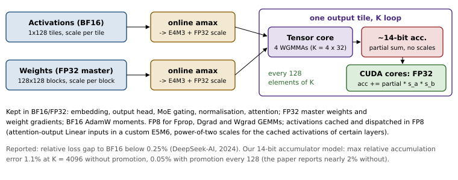
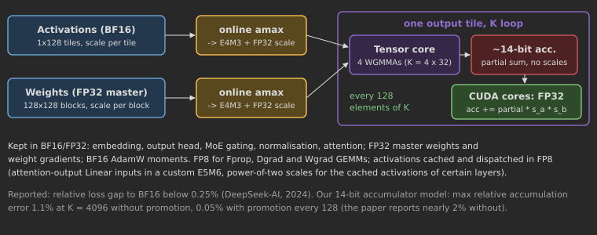
- E4M3 for all tensors, including gradients (“mantissa over exponents”): the fine-grained scales provide the range that E5M2 would otherwise be needed for. Our heavy-tailed measurement in Section 4.4 (2.2% flushed with \(1\times128\) tiles, 59% per tensor) shows why this works.
- Fine-grained scaling: activations get one FP32 scale per \(1\times128\) tile (per token, per 128 channels), weights one per \(128\times128\) block. Weights change slowly and are reused by all tokens, so coarse 2-D blocks suffice and keep the scale tensor tiny; activations vary per token and carry outlier channels, so their tiles are thin.
- Online scaling: each tile’s amax is computed when it is quantised; no delayed history.
- Increased accumulation precision: promotion to FP32 CUDA-core registers every 128 elements along \(K\) (four WGMMAs), where the per-tile and per-block scales are also applied. Because the activation tile and the weight block both have extent 128 along \(K\), the scales are constant inside each accumulation window, and the scaling costs one multiply per output per window.
- What stays in higher precision: the embedding, the output head, the MoE gating, the normalisation operators and the attention operators run in BF16 or FP32. Master weights and weight gradients are FP32; the AdamW moments are BF16.
- Low-precision storage and communication: activations saved for the backward pass of linear layers are cached in FP8. The inputs of the SwiGLU operator in the MoE layers are cached in FP8 and the SwiGLU output is recomputed in the backward pass instead of stored. Activations are quantised to FP8 before the MoE dispatch (the up-projections consume FP8 anyway), and the activation gradients before the MoE down-projections are likewise sent in FP8; the forward and backward combine stay in BF16. The inputs of the linear layer after attention, which the attention backward also uses, get a custom E5M6 format, and their scales are powers of two so that converting the \(1\times128\) tiles to \(128\times1\) tiles for the backward pass adds no error (Section 5.3).
- Result: the paper validates the framework against BF16 on two MoE models of the scale of DeepSeek-V2-Lite and DeepSeek-V2, about 16B and 230B total parameters trained on about one trillion tokens (1.33T and 0.9T in its appendix), and reports a relative loss error that stays below 0.25%, within training randomness.
We simulate the GEMM part with numerics.fp8_gemm_sim (and the lab’s fp8_block_gemm). For activations with four outlier channels (magnitude 20) and Gaussian weights, the total error against the exact FP64 product is 3.1–3.5% with tile/block scaling against 3.7–3.8% per tensor; the accumulation error alone is \(1.2\times10^{-4}\) with promotion against up to \(6.6\times10^{-3}\) without (Section 4.6). The accumulation error is small next to the representation error, but it is a bias toward zero that grows with \(K\), and biases, unlike noise, compound over a training run. DeepSeek also asked hardware vendors for tensor cores that accept fine-grained scales and accumulate at full precision; Blackwell’s block-scaled MMAs for MX and NVFP4 are the first answer.
5.8 Research frontier
Open problems. FP4 training. Blackwell’s MXFP4 and NVFP4 tensor cores double FP8 throughput again, and 2025 brought the first credible FP4 pre-training results: NVFP4 with random Hadamard transforms, 2-D weight scaling, stochastic rounding of gradients and a few BF16 layers (NVIDIA, 2025), MXFP4 with stochastic rounding and Hadamard transforms in the backward pass (Tseng et al., 2025), native FP4 training with a low-precision scaling law (Castro et al., 2025), and fully quantised NVFP4 training of a 7B model (Chmiel et al., 2025). Kumar et al. (2024) fitted scaling laws for precision: training in low precision acts like a smaller effective parameter count, and post-training quantisation hurts more the longer a model was trained. Which tensors can go to 4 bits, at which scale and token budget the gap to BF16 opens, and whether the answer changes with model size are open. Scale formats and scale rules: FP32, E4M3 and E8M0 scales, one level or two, the floor or the round-up rule for a shared exponent; how many bits a scale needs, and how that interacts with the backward pass (power-of-two scales make re-quantisation exact), has no settled answer. Rotations: inference methods fold fixed or learned rotations into the weights (Ashkboos et al., 2024; Liu et al., 2025), FP4 training applies random Hadamard transforms on the fly, and our measurement shows the same transform helping MXFP4 and INT4 groups while hurting NVFP4; which transform suits which scale format and granularity is open. Low-precision optimiser states and communication: 8-bit Adam states (Dettmers et al., 2022), FP8 gradients and states (Peng et al., 2023) and the precision of gradient all-reduces at scale. Outlier-free architectures: if outliers did not form, per-tensor INT8 and FP8 would be enough; attention variants that avoid “no-op” heads (Bondarenko et al., 2023) and smoothed SwiGLU (Fishman et al., 2025) are first steps.
Papers that define the area.
- Micikevicius et al. (2018), Mixed Precision Training: FP16 compute, FP32 master weights, loss scaling; the recipe everything else modifies.
- Dettmers et al. (2022), LLM.int8(): outlier features in LLM activations and why per-tensor scaling fails.
- Rouhani et al. (2023), Microscaling Data Formats: shared E8M0 scales per 32 elements; the OCP MX standard.
- DeepSeek-AI (2024), DeepSeek-V3: fine-grained scaling, promotion and FP8 storage and communication at frontier scale.
- Ashkboos et al. (2024), QuaRot: rotations folded into the weights remove activation outliers for 4-bit inference.
- Kumar et al. (2024), Scaling Laws for Precision: precision as a third axis of scaling laws, next to parameters and data.
- Fishman et al. (2025), Scaling FP8 Training to Trillion-Token LLMs: failures that only appear late in long runs.
- Mishra et al. (2025), Recipes for Pre-training LLMs with MXFP8: MXFP8 for all tensors once the shared exponent is rounded up and each tensor is quantised along both reduction axes.
- NVIDIA (2025), Pretraining LLMs with NVFP4: a 12B model on 10T tokens in NVFP4, with \(16\times16\) weight blocks, random Hadamard transforms on Wgrad inputs, stochastic rounding of gradients and a few BF16 layers.
- Tseng et al. (2025), Training LLMs with MXFP4: stochastic rounding plus random Hadamard transforms make MXFP4 backward passes viable.
- Castro et al. (2025), Quartet: FP4 training on Blackwell kernels, with a scaling law that says when FP4 is compute-optimal.
- Chmiel et al. (2025), FP4 All the Way: fully quantised NVFP4 training (weights, activations, gradients) and a criterion for when quantisation noise stalls training.
Assumptions likely to break. That a power-of-two scale is good enough (NVFP4 already uses E4M3 scales). That one block orientation serves all three GEMMs of a training step (the weight gradient reduces over tokens). That outliers are a fixed property of the data rather than of the architecture and optimiser. That weight MSE is the right objective (the loss weights errors by input statistics, Section 5.5). That master weights are free (at trillion-parameter scale, 4 bytes per parameter is a cluster’s worth of HBM). And that results at short horizons predict long runs.
How to recognise the next variant. Place a new paper on these axes: (1) element format and which tensors use it (weights, activations, gradients, optimiser states, KV cache, communication); (2) scale format (FP32, E4M3, E8M0, one level or two) and granularity (tensor, row, block, along which dimension); (3) how scales are computed (delayed, current, learned, calibrated, power of two or not); (4) transforms applied before quantisation (smoothing, rotations, Hadamard); (5) the error objective (MSE, Hessian-weighted, end-to-end loss) and whether it is post-training or quantisation-aware; (6) which operations stay in high precision, and how the backward pass is scaled; (7) rounding and accumulation, the axes of Section 4.8; (8) what hardware executes it natively and what it costs where it does not. Most new methods change one or two of these and keep the rest of a known recipe.
5.9 Summary
- A scale maps a tensor’s range onto a format’s window; its granularity, format, rule and the kernel that applies it define a low-precision scheme. A scale constant along the reduction dimension factors out of a GEMM; any finer one must be applied inside the \(K\) loop or the MMA.
- MX shares an E8M0 scale per 32 elements, NVFP4 an E4M3 scale per 16 plus an FP32 tensor scale. Block scaling buys about \(10\log_{10}(\ln N/\ln B)\) dB on Gaussian data and far more with outliers; 4-bit formats are unusable without it (62% GEMM error per tensor, 12.7% for NVFP4).
- Hadamard rotations spread outliers over a block (they help MXFP4 and INT4, not NVFP4, in our measurement), and the backward pass needs scales along other dimensions: two copies, 2-D blocks, or power-of-two scales that make re-quantisation exact.
- Quantisation error is \(s^2/12\) inside the range (6 dB per bit) plus clipping error outside; optimal clipping beats absmax by a factor of three to five at 4 bits; zero points cost epilogue terms; NF4 suits Gaussian weights; outliers set the scale.
- The Hessian \(\tfrac2n\mathbf{X}^{\top}\mathbf{X}\) weights errors by input statistics and yields the OBS update that GPTQ applies column by column.
- Mixed precision: narrow inputs, wide accumulators, FP32 master weights and sensitive ops, loss scaling for FP16. Delayed FP8 scaling saturates on a spike (91% error) where current and block scaling do not.
- DeepSeek-V3’s FP8 recipe adds E4M3 everywhere, \(1\times128\)/\(128\times128\) online scales, promotion every 128 and FP8 storage and communication, within 0.25% of BF16. At inference the bottleneck picks the format: weight-only for decode, W8A8 or FP4 for prefill, a quantised KV cache for long contexts.
5.10 Exercises
Exercise 5.1 (Metadata and kernels).
For a \(4096\times4096\) weight, compute the bytes of elements and of metadata for: INT8 per output channel with FP32 scales; INT4 with groups of 128, FP16 scales and INT4 zero points; MXFP4; NVFP4; FP8 with DeepSeek’s \(128\times128\) blocks. For each, say whether the scale factors out of the dot product, and describe what the GEMM kernel must do with it.
Exercise 5.2 (The block-scaling gain, derived).
For a symmetric INT-\(b\) quantiser with the absmax scale, show that the mean squared error is about \(\mathbb{E}[\max|x|^2]/(12\,q_{\max}^2)\) over the elements sharing a scale, and use \(\max|x|\approx\sigma\sqrt{2\ln n}\) to predict the gain in signal-to-noise ratio of blocks of 128, 32 and 16 over one scale for a \(4096\times4096\) Gaussian tensor. Compare with the 7.05 dB we measure for blocks of 32. Then explain why the gain on the outlier activations of Figure 5.3 is much larger, and why the prediction does not apply to a floating-point element format.
Exercise 5.3 (Hadamard and the block maximum).
An activation row has independent \(\mathcal{N}(0,1)\) entries and one outlier channel of standard deviation \(a\) in a block of \(b\) channels. What is the distribution of the entries of that block after the normalised (randomised) Hadamard transform? Predict the ratio of the largest activation to the RMS for the bench’s activations (\(2048\times4096\), eight outlier channels scaled by 30) after transforms of size 16, 32, 128 and 4096, and compare with the measured 18.1, 13.3, 7.5 and 5.1. For which inputs does the transform make a block’s maximum larger, and what does the random sign diagonal protect against?
Exercise 5.4 (Zero points in a GEMM).
For \(\mathbf{C}=\mathbf{A}\mathbf{W}^{\top}\) with \(\mathbf{A}\) (\(M\times K\)) quantised asymmetrically per token and \(\mathbf{W}\) (\(N\times K\)) symmetrically per output channel, write the integer GEMM and the epilogue, and say which terms can be precomputed offline. Repeat with asymmetric weights. For \(M=N=K=4096\), what fraction of the GEMM’s work do the extra terms cost, and why do kernels avoid asymmetric weights anyway?
Exercise 5.5 (Optimal clipping for a Laplace distribution).
For \(x\sim\operatorname{Laplace}(0,\beta)\) derive the clipping term of (5.5) in closed form and minimise the total MSE numerically for \(b=4\) and \(b=8\) (symmetric, narrow range). Compare your optimum with Figure 5.5 (where \(\sigma=\sqrt2\beta\)).
Exercise 5.6 (Loss scaling).
Gradients of a model are log-normally distributed in magnitude with median \(10^{-7}\) and \(\sigma_{\log_{10}}=1.5\); the largest gradient seen so far is 0.3. Compute the fraction of gradient values that FP16 flushes to zero without scaling, the largest power-of-two loss scale that does not overflow, and the fraction flushed with it. Verify with numerics.classify. How often does GradScaler with default settings skip a step if a true overflow occurs once every 10,000 steps?
Exercise 5.7 (Delayed scaling and a spike).
A delayed-scaling recipe casts step \(t\)’s activations to E4M3 with the scale \(448/a_t\), where \(a_t\) is the largest amax of the previous \(L\) steps. In the stream of Figure 5.7 the activations are \(\mathcal{N}(0,\sigma_t^2)\) with \(\sigma_t=1+0.01t\), \(1024\times1024\) per step, and at step 30 one token’s activations are multiplied by 100. (a) Predict how many of that token’s 1,024 values saturate. (b) For the \(L=16\) steps after the spike, predict how many values per step are flushed to zero, and compare with current scaling. (c) A margin divides the scale by \(2^\mu\) in advance. Which \(\mu\) absorbs a spike of 100, and what does it cost on calm steps?
Exercise 5.8 (Research: MX scaling inside the MMA versus promotion).
Extend the lab’s fp8_block_gemm to the setting of Rouhani et al. (2023): MXFP8 E4M3 operands with an E8M0 scale per 32 elements along \(K\), the scales applied to each 32-deep MMA result before it enters a (14-bit, truncating) accumulator, and no promotion. Predict, before running, how its accumulation error compares at \(K=4096\) with DeepSeek-V3’s FP32 promotion every 128, and how its total error compares given the E8M0 scale. Measure both on activations with outlier channels and explain the differences. Which design would you want in hardware?
Exercise 5.9 (Research: two-dimensional NVFP4 weight blocks).
Extend the lab’s nvfp4_quantize to the setting of the NVFP4 pre-training recipe (NVIDIA, 2025): one E4M3 scale per \(16\times16\) tile of the weight, so that the copies used by the forward GEMM (blocks along \(K\)) and by the data-gradient GEMM (blocks along \(N\)) are the same. Predict, then measure with numerics.quantize(x, E2M1, block=(16, 16), scale_fmt=E4M3), the error of the 2-D copy against \(1\times16\) and \(16\times1\) blocks for Gaussian weights (\(\sigma=0.02\)) and for the outlier activations of Section 5.3. Explain why the recipe uses 2-D blocks only for weights, and what a re-quantised \(16\times1\) copy would cost instead.
5.11 Lab 5: Scales, quantisers and a block-scaled FP8 GEMM
Lab 5: Scales, quantisers and a block-scaled FP8 GEMM
Code: code/labs/lab05_quant
Goals
Build the scaling and quantisation half of llmsys/numerics.py on top of the formats of Lab 4: OCP MX block scaling, NVFP4’s two-level scales, the fast randomised Hadamard transform, per-group affine integer quantisation, the Hessian-weighted error with the OBS update, and the DeepSeek-V3 block-scaled FP8 GEMM with a limited-precision accumulator and promotion. Then measure what scale granularity, rotations, re-quantisation for the backward pass, FP8 scaling rules and FP16 loss scaling do to the error. The low-precision training capstone (Chapter 7) uses exactly these quantisers.
Setup
cd code
python -m pytest -q labs/lab05_quant # grades starter.py
LAB_IMPL=solution python -m pytest -q labs/lab05_quant # the reference (seconds, CPU)
CUDA_VISIBLE_DEVICES=0 python labs/lab05_quant/bench.py # measurements (emulated)
python labs/lab05_quant/figures.py # redraw this chapter's figuresTasks
- Microscaling.
mx_quantizeandmx_dequantizewith the OCP scale rule (5.1); compared bit for bit withnumerics.mx_quantizefor MXFP4, MXFP6 and MXFP8, and checked to beat per-tensor FP4 by more than 10 dB on data spanning four decades. - NVFP4.
nvfp4_quantizeandnvfp4_dequantizewith the two-level scales of (5.2); compared withnumerics.nvfp4_quantize, and checked to place every block’s maximum near the top of the E2M1 grid. - Rotations.
hadamard_transform, the fast Walsh–Hadamard transform with an optional random sign diagonal (Listing 5.1); tested against the dense Hadamard matrix, for invertibility, for leaving \(\mathbf{X}\mathbf{W}^{\top}\) unchanged, and for spreading a single spike of size \(a\) to \(a/\sqrt b\) in every channel of its block. - Affine quantisation.
quantize_affineanddequantize_affine, per group, symmetric and asymmetric; tested for the \(s/2\) round-trip bound and an exactly representable zero. - Second order.
hessian_weighted_errorandobs_update; tested against the actual output loss and a brute-force least-squares solution. - Block-scaled FP8 GEMM.
fp8_block_gemmwith DeepSeek-V3’s \(1\times128\) activation tiles, \(128\times128\) weight blocks, a 14-bit truncating accumulator and promotion every 128; tested againstnumerics.fp8_gemm_simand against per-tensor scaling on activations with an outlier channel.
The last block of tests checks the library itself: the NF4 grid against the published table, quantisation with every block shape and its metadata, the dynamic loss scaler and the amax history, delayed scaling saturating on an activation spike while current scaling does not, the library’s Hadamard transform, and exact re-quantisation with power-of-two scales.
Measurements
bench.py writes results/bench_results.{json,md} (emulated on 2x A100-40GB (PCIe); every number is a deterministic simulation and should match ours exactly). GEMM error against granularity (Figure 5.3): per-tensor FP4 62% against 12.7% for NVFP4 and 19.1% for MXFP4; INT8 from 15.6% per tensor to 2.2% with \(1\times128\) tiles (blocks). Hadamard transforms: MXFP4 19.1% to 15.9%, NVFP4 12.7% to 14.4% (hadamard). Copies for the weight-gradient GEMM: 2.6% direct, 3.0% re-quantised, exact with power-of-two scales (backward). The block-scaled FP8 GEMM: 3.4% total error at \(K=4096\) against 3.7% per tensor, with an accumulation error of \(1.2\times10^{-4}\) (deepseek). Delayed FP8 scaling: 91% error at an activation spike against 2.7% for current scaling (scaling). FP16 loss scaling: 10.4% of small gradients flushed unscaled, 0.017% with \(S=2^{10}\) (lossscale).
Deliverables
Passing tests; your bench_results.md; a half-page note explaining (a) which granularity you would choose for 4-bit weights and for 8-bit activations, with numbers, (b) why a Hadamard transform helps MXFP4 and hurts NVFP4, and (c) which of delayed, current and block FP8 scaling you would use in a training run, and what each costs.
Stretch goals
(1) Add an MXINT8 format and compare it with MXFP8 in the granularity experiment. (2) Add a margin to the delayed-scaling experiment and find the smallest one that survives the spike. (3) Quantise the weights of the hadamard experiment in \(16\times16\) NVFP4 blocks and compare. (4) Loop obs_update over the columns of a weight matrix, quantising one column at a time and updating the rest: a first GPTQ, which Chapter 48 develops.